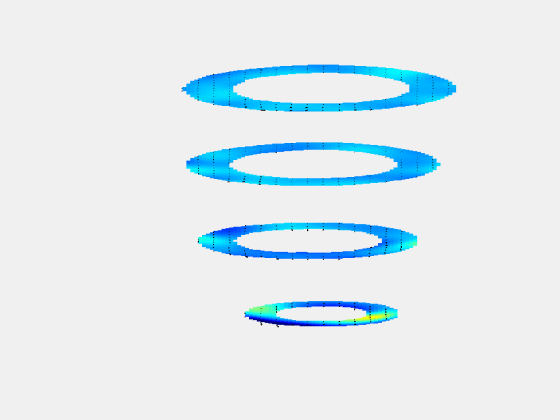
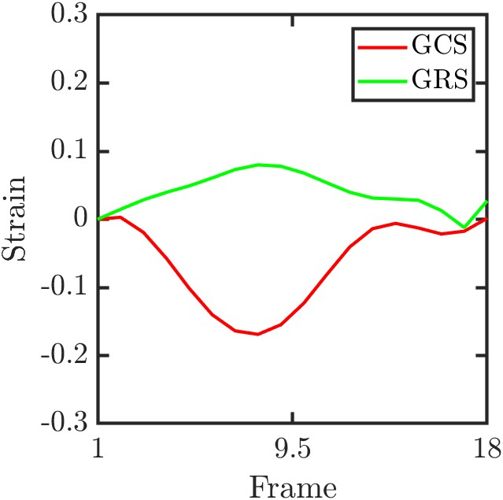
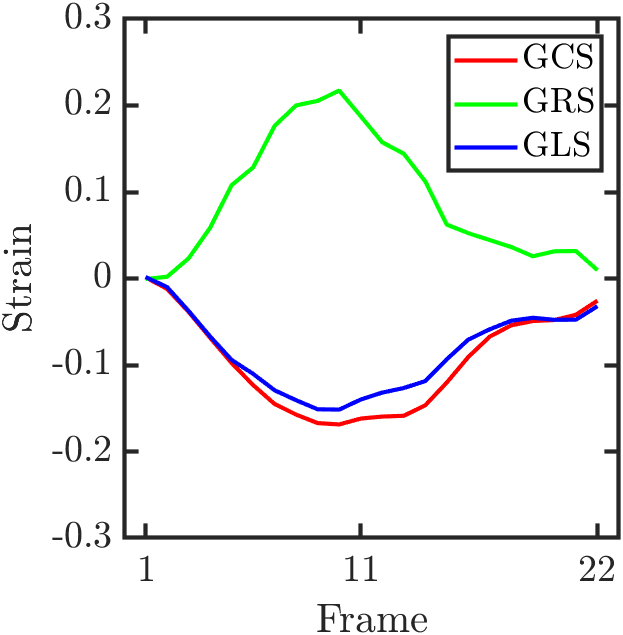

HARP-I (Harmonic Phase Interpolation) is a novel method for estimating motion from tagged MR images. This documentation details how the repository’s code implements the theoretical concepts and equations presented in .
The common folder contains utility functions that support the overall HARP-I pipeline.
Butterworth23D.m – Designs a Butterworth bandpass filter.
Code Extract:
dGrid = sqrt(sum(WaveVec.^2));
shift = (1./dGrid) * (WaveVec/dGrid);
cutoff = 0.8*(1./dGrid);
f = ifftshift( 1.0 ./ (1.0 + (radius ./ cutoff).^(2*n)) );
Correspondence: This filtering step corresponds to the isolation of the harmonic peak in k-space as described in Section 2.2.
WindowFilter.m – Implements Riesz and Tukey window filters.
Code Extract:
H0 = ones([1, s]);
H0(1:s20) = H0(1:s20) .* flip(w1);
Correspondence: Although not explicitly in the paper, it aids in noise reduction prior to phase extraction.
Wrap.m – Wraps phase values to the range $$[-\pi,\pi]$$.
Code Extract:
W = mod(phase + pi, 2*pi) - pi;
Correspondence: Implements the wrapping operator used in Equation (3).
flatten.m – Reshapes matrices into vectors.
Correspondence: Prepares data for constructing the RBF interpolation matrix in Equation (7) and Equation (8).
getHarmonicCenter.m – Determines the harmonic center in k-space.
Code Extract:
s = round(0.5*size(K));
c = round(s + omega .* FOV / (2*pi));
Correspondence: Locates the harmonic peak (Section 2.2).
getMask.m – Generates binary masks from contours.
Correspondence: Used to delineate the region of interest.
getStrainBySegments.m – Computes strain for angular segments.
Correspondence: Supports strain analysis as detailed in Section 4.
itok.m – Converts image data to k-space.
Correspondence: Fundamental for the Fourier-domain processing (Section 2.2).
ktoi.m – Converts k-space data back to image space.
Code Extract:
Data = fftshift(ifftn(ifftshift(Data)));
Correspondence: Complements itok.m for image reconstruction.
maskSA.m – Creates masks based on polygon contours.
Correspondence: Defines ROI for analysis.
parseinputs.m – Parses and validates input parameters.
Correspondence: Provides flexible configuration for the pipeline.
The RBF folder contains the core functions for Radial Basis Function interpolation, which is key to reconstructing the displacement field.
rbfx (Abstract Class) – Defines the interface for RBF kernels.
Key Equations:
g(y) = \sum_{i=1}^{N_{\text{pixels}}} \lambda_i \, \psi\Bigl(\|y - X_V(x_i,t_k)\|\Bigr)
(\Psi + \eta I)\lambda = G
Code Extract:
methods(Abstract = true)
v = rbf(obj, r, a);
% Other abstract methods...
end
distanceMatrix2dNew.m and distanceMatrix3dNew.m – Compute Euclidean distance matrices.
Code Extract (2D):
rx = xc - xc';
ry = yc - yc';
r = sqrt(rx.^2 + ry.^2);
Correspondence: These distances are used in Equation (7).
solve.m – Solves the system
$$ (\Psi + \eta I)\lambda = G $$
Code Extract:
if eta > 0
B(1:N+1:end) = B(1:N+1:end) + eta;
end
a = B \ f;
Correspondence: Direct implementation of Equation (8).
RBFInterp2D.m and RBFInterp3D.m – Perform the RBF interpolation.
Code Extract (2D):
B = phi.rbf(r, a);
w = rbfx.solve(B, y', p, true);
Psi = phi.rbf(re, a);
xe = Psi * w;
Correspondence: Reconstructs the displacement field as per Equation (7) and Equation (8).
variableShape.m – Generates variable shape parameters for the RBF kernel.
Correspondence: Supports the selection of the scale parameter Equation (7) and Equation (16).
The HARP-I folder integrates the full motion estimation pipeline for tagged MR images.
HARPI.m – Main function for processing 2D images.
Key Steps and Equations:
Phase Unwrapping: Corrects $$2\pi$$ discontinuities using unwrap2 as described in Equation (3).
Temporal Correction: Uses TemporalPhaseConsistency.m to enforce phase consistency (Equation (12)).
RBF Interpolation: Reconstructs displacement by solving
$$ (\Psi + \eta I)\lambda = G, $$
as shown in Equation (7) and Equation (8).
RBF Kernel: The parameter a_constant is used in
$$ \psi(r) = \Bigl(r^2 + a^2\Bigr)^{3/2}, $$
corresponding to Equation (7). in this case the RBF used are the multiquadric.
HARPI_3D.m – Extends the method to 3D datasets.
Key Steps and Equations:
3D Phase Unwrapping: Uses unwrap3 to correct $$2\pi$$ discontinuities.
Temporal Correction: Applies TemporalPhaseConsistency3D.m extension of (Equation (12)).
3D RBF Interpolation: Uses rbfx.RBFInterp3D for volumetric displacement reconstruction.

Result of HARPI_3D
RefPhaseSmoothing.m and RefPhaseSmoothing3D.m – Smooth the reference phase prior to RBF interpolation.
Correspondence: These functions help condition the RBF system, corresponding to the parameter definitions in Equation (16).
TemporalPhaseConsistency.m and TemporalPhaseConsistency3D.m – Correct temporal phase inconsistencies.
Code Extract (2D):
delta = floor((ref_pha_max - pha_max) / (2*pi));
jumps_x = [0, 2*pi*((delta(1)-njumps):(delta(1)+njumps))];
Correspondence: Implements the optimization problem (Equation (12)) for temporal phase correction.
ktoi.m – Converts k-space data back to image space.
Code Extract:
Data = fftshift(ifftn(ifftshift(Data)));
Correspondence: Complements itok.m in the Fourier-domain processing (Section 2.2).
maskSA.m – Computes a binary mask from polygon contours.
Below is an example 2D of global circumferential strain (GCS) and global radial strain (GRS) as computed by the HARP-I pipeline.

GCS, GRS, and GLS strain curves across frames.
Below is an example HARPI_3D of global circumferential strain (GCS), global radial strain (GRS),
and global longitudinal strain (GLS) over 22 frames, as computed by the HARP-I pipeline.

GCS, GRS, and GLS strain curves across frames.6
Conclusion
In summary, the HARP-I repository implements a complete, modular pipeline for motion estimation from tagged MR images. The key computational steps are:
Fourier-domain filtering: Using itok.m and ktoi.m with the Butterworth filter (Butterworth23D.m) to isolate harmonic peaks (see Section 2.2).
Phase unwrapping and normalization: Performed by Wrap.m and the unwrapping routines (unwrap2/unwrap3), implementing the wrapped phase in Equation (3)
Temporal phase correction: Enforced by TemporalPhaseConsistency.m and TemporalPhaseConsistency3D.m(Equation (12)).
Displacement reconstruction: Achieved via RBF interpolation Equation (7) and Equation (8), using the rbfx class and functions such as RBFInterp2D/3D.m. The kernel is defined as
$$\psi(r) = \Bigl(r^2 + a^2\Bigr)^{3/2},$$
with a_constant set as per Equation (16)
Supplementary utilities: Segmentation and smoothing routines (e.g., getSegmentation.m, getMask.m) focus the analysis on the region of interest.
Contributions
The HARP-I repository was developed by Hernán Mella, Joaquín Mura, Julio Sotelo, and Sergio Uribe. Its modular structure mirrors the theoretical pipeline described in the paper, covering Fourier filtering, phase unwrapping, temporal correction, and RBF interpolation.
Reviewers
The code and documentation have been reviewed by experts in MRI motion estimation and numerical methods.